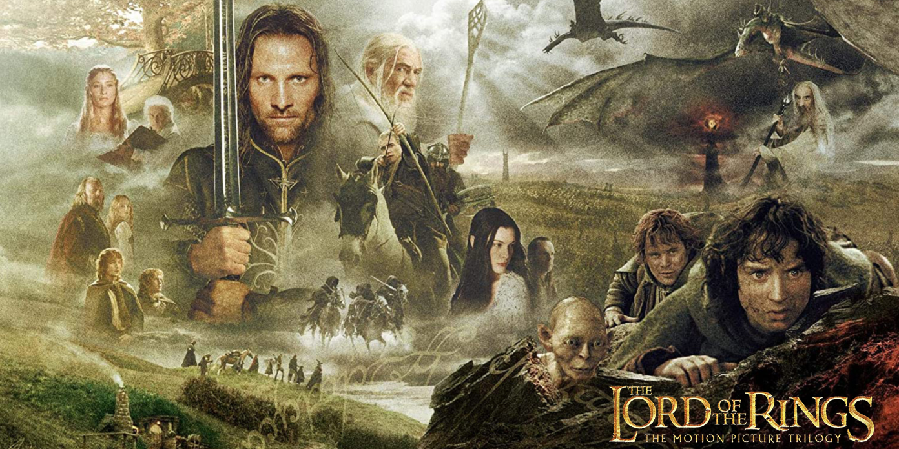
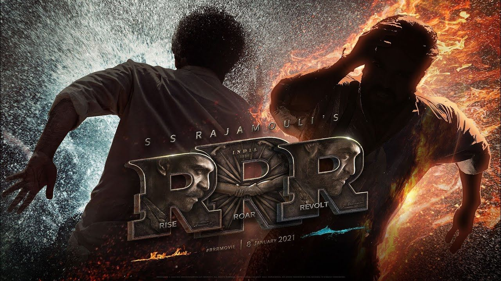
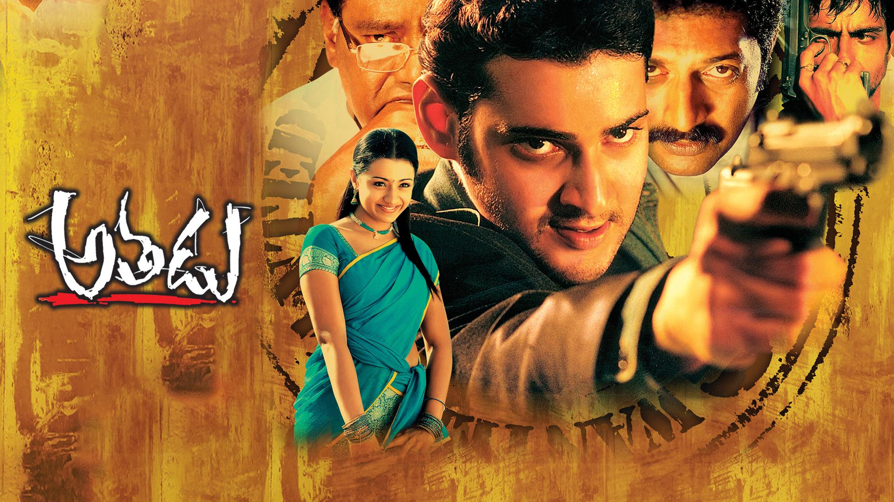
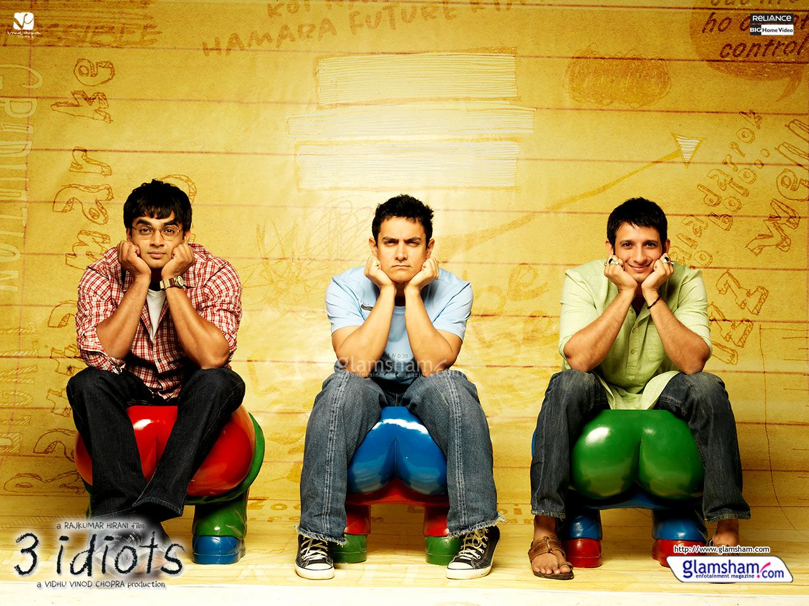

Examples of Cinema
- English: The Lord of the Rings Trilogy-Demonstrates large-scale cinematic storytelling.
Directed Peter Jackson The Lord of the Rings trilogy follows the heroic quest of the Hobbit Frodo Baggins. He must destroy the powerful One Ring by casting it into the fires of Mount Doom. Along with a diverse fellowship, Frodo faces great danger to defeat the dark lord Sauron and save Middle-earth.

- Telugu: RRR-combines action, music, visual effects, and storytelling.
Directed by SS Rajamouli.RRR is a fictional tale of two real-life revolutionaries—Alluri Sitarama Raju and Komaram Bheem. Unaware of each other's true identities and missions, they form a deep bond of friendship after saving a child. When their opposing paths and hidden loyalties clash, they ultimately unite to wage an epic war against the oppressive British regime.

- Hindi: Lagaan-combines entertainment, culture, music, history, and social themes.
Directed by Ashutosh Gowariker.Lagaan follows a drought-stricken village struggling with an unbearable land tax (lagaan). When a cruel British officer challenges them to a high-stakes game of cricket, A daring farmer named Bhuvan rallies his untrained fellow villagers to learn the sport and play for their freedom from taxes.
🎥 Film
A film is a specific work created using moving images to tell a story, present ideas, or document events. The word "film" is often used when discussing the artistic and creative aspects of filmmaking, including storytelling, cinematography, acting and direction.
Examples of Film
- English: Shawshank Redemption-recognized for its storytelling and performances.
Wrongly accused of murder, banker Andy Dufresne is sent to Shawshank prison in 1947. He spends decades enduring brutal abuse while befriending fellow inmate Red. Using his financial skills, Andy gains protection from the warden by laundering illegal money. He secretly carves a tunnel and escapes, exposing the corruption.Direrected by Frank Darabont.
- Telugu: Jersey-focuses on character development, family, Ambition, and Determination.
Directed by Gowtam Tinnanuri, Jersey is an emotional Telugu sports drama about Arjun (Nani), a talented but failed former cricketer in his mid-30s. Struggling with unemployment and a strained family life, he decides to return to cricket at age 36. He strives to make the national team to earn a team jersey and regain his young son's respect.

- Hindi: Taare Zameen Par — explores childhood, education, and individual differences.
Taare Zameen Par is a 2007 emotional drama Directed by Aamir Khan about Ishaan, an eight-year-old boy with undiagnosed dyslexia who struggles in school and faces constant scolding. Misunderstood as lazy, he is sent away to a boarding school where his depression deepens. A cheerful new art teacher, Ram Shankar Nikumbh, identifies his learning disability and uses patient, creative methods to help him regain his confidence and joy.
🍿 Movie
A movie is a motion picture that people watch, particularly when talking about entertainment or the experience of watching it. For example: "Let's watch a movie tonight."
Examples of Movie
- English: Avengers: Endgame
Directed by Russo brothers.In Avengers: Endgame, the surviving superheroes try to fix the damage caused by Thanos. Thanos had erased half of all life in the universe. The team uses time travel to gather the Infinity Stones from the past. They bring back everyone who vanished in a massive final battle. Iron Man sacrifices his own life to defeat Thanos.Captain America then retires and passes on his shield.
- Telugu: Athadu
Directed by Trivikram Srinivas. Nandu, a professional hitman, is framed for a political murder he was only hired to fake. While fleeing the police, he assumes the identity of a deceased man named Pardhu whom he encounters by chance. He takes refuge with Pardhu's unsuspecting family in a rural village. As he experiences familial love and bonds with them, a determined CBI officer closes in on the truth..

- Hindi: 3 Idiots
Directed by Raj kumar Hirani, 3 Idiots follows two friends searching for their long-lost college buddy, Rancho, recounting their time at an elite engineering college through flashbacks. Rancho is a free-spirited rebel who challenges the rigid, rote-learning education system and inspires his friends to follow their true passions. After graduation, Rancho mysteriously vanishes, leading his friends on a journey that reveals a life-changing secret about his true identity.
